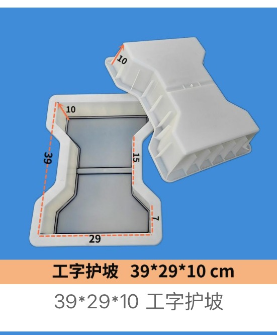
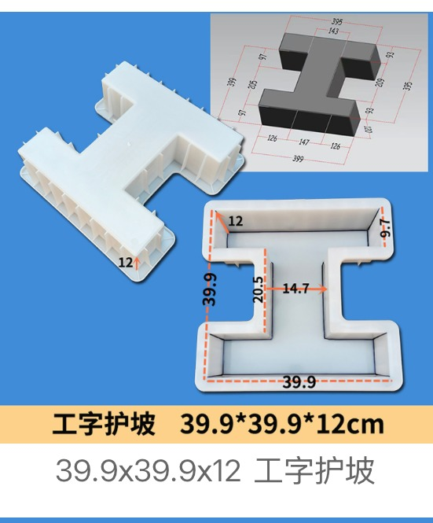
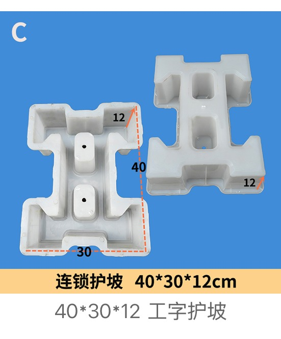
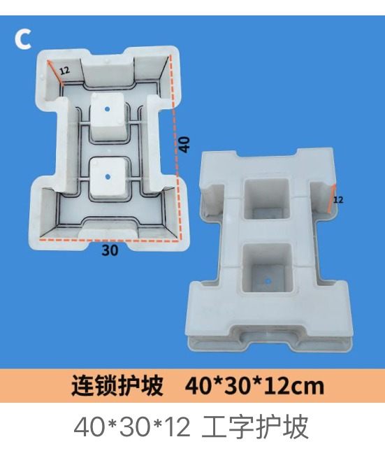

Representative Stepped Slope Block Moulds
Complete product-card images selected from qualified slope-protection materials. Dimensions below follow the source-card OCR text.
Half-I Stepped Slope Blocks

Half-I Stepped Slope Block Mould 26 × 49 × 8 cm
Block size 26 × 49 × 8 cm

Half-I Stepped Slope Block Mould 50 × 30 × 10 cm
Block size 50 × 30 × 10 cm
I-Shaped (Dogbone) Slope Blocks

I-Shaped Slope Block Mould 39 × 29 × 10 cm
Block size 39 × 29 × 10 cm

I-Shaped Slope Block Mould 39.9 × 39.9 × 12 cm
Block size 39.9 × 39.9 × 12 cm

I-Shaped Slope Block Mould 40 × 30 × 10 cm
Block size 40 × 30 × 10 cm

I-Shaped Interlocking Slope Block Mould 40 × 30 × 12 cm
Block size 40 × 30 × 12 cm · interlocking tongue-and-groove edges · 2 grass-planting voids

I-Shaped Interlocking Slope Block Mould 40 × 30 × 12 cm
Block size 40 × 30 × 12 cm · interlocking tongue-and-groove edges · 2 grass-planting voids

I-Shaped Slope Block Mould 40 × 30 × 15 cm
Block size 40 × 30 × 15 cm

I-Shaped Slope Block Mould 46 × 49 × 8 cm
Block size 46 × 49 × 8 cm
I-Shaped Slope Block Mould 46.7 × 34.7 × 10.5 cm
Block size 46.7 × 34.7 × 10.5 cm

I-Shaped Slope Block Mould 50 × 30 × 10 cm
Block size 50 × 30 × 10 cm